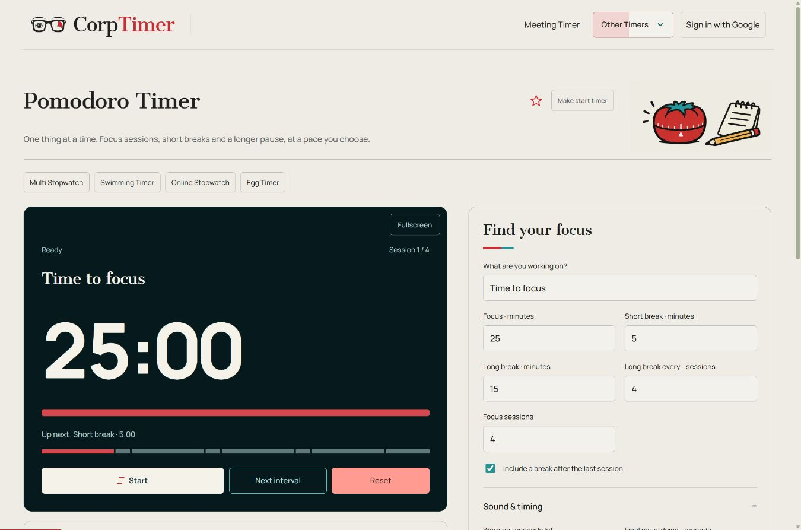

Pomodoro Timer
One thing at a time. Focus sessions, short breaks and a longer pause, at a pace you choose.
Time to focus
Space to start or pause.
Keep this tab open. Mobile and background alarms depend on your browser and device. After a reload, saved sessions return paused.
How it works and advice
Step by step: Pomodoro Timer
- Set the timing using the controls beside the clock. Choose a suitable preset when available, then adjust it to your session.
- If you need an alarm, choose its sound and volume and press Test sound. Turn sounds off for quiet work.
- Press Start to begin and Pause to hold the clock. Reset returns the session to its beginning. For a stopwatch, Lap records a split while running.
- Drag the timeline to correct the time, then resume when ready. Fullscreen enlarges the clock without moving the account controls into the timer.
- Save current as template to reuse the setup. The outlined red star adds the timer to favorites; press it again to remove it.

When to use this timer
- Study one chapter before taking a short break.
- Write a first draft in repeated focus sessions.
- Plan a longer recovery after several sessions.
How the Pomodoro Timer works
This Pomodoro timer alternates focused work with planned breaks. The starting setup has four 25-minute focus sessions, 5-minute short breaks and a 15-minute long break after the fourth session. Focus, short break and long break are entered in minutes and can all be changed.
Name the task, set the number of focus sessions and choose how often a long break appears. Include a break after the last session if you want a complete work-and-recovery sequence, or turn that option off to finish at the end of the last focus interval.
Automatic transitions start the next interval when the current one ends. Turn them off if you prefer to decide when work or a break should begin. Pause preserves your place, and the interval plan shows what comes next. A saved setup keeps your chosen rhythm for another session.
Advice for using the Pomodoro Timer
- Choose one concrete task before pressing Start, such as outlining a page or reviewing one chapter.
- Keep a note for interruptions so you can return to them after the focus interval.
- Make breaks distinct from the task instead of filling them with another unfinished work item.
- Shorten or lengthen the focus interval to suit the task; 25 minutes is a starting point, not a requirement.
- Use manual transitions if a break needs to finish before you are ready to resume work.
Useful details
Do I have to work for exactly 25 minutes?
No. Focus, short-break and long-break lengths are all editable. You can also choose the number of sessions and the long-break frequency.
Are settings synchronized with my meeting account?
These standalone tools keep their own settings and saved setups in this browser. They do not use Google/Firebase meeting synchronization. Export and import a setup to transfer it to another device.
Will this timer work if I close the page?
Keep the timer tab open. Browsers can suspend background tabs, especially on phones. Elapsed time is recalculated when the page resumes, but an alarm at the exact deadline cannot be guaranteed. Reloaded interval, stopwatch and chess sessions return paused; the New Year countdown follows its selected date and time zone.